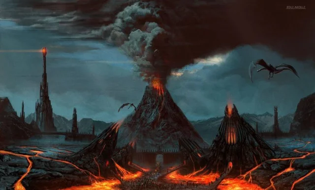
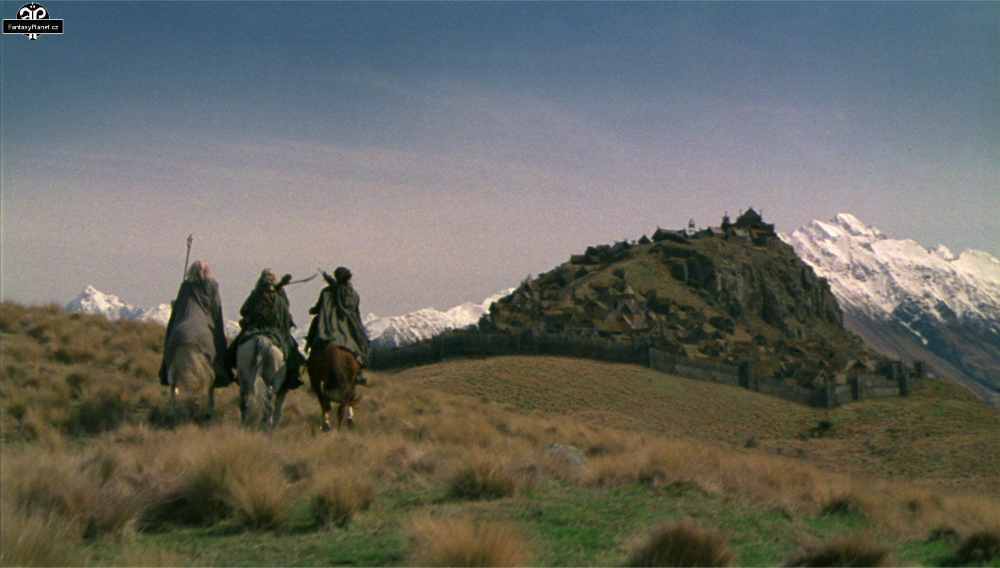
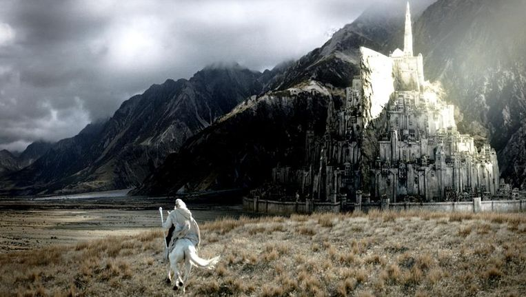
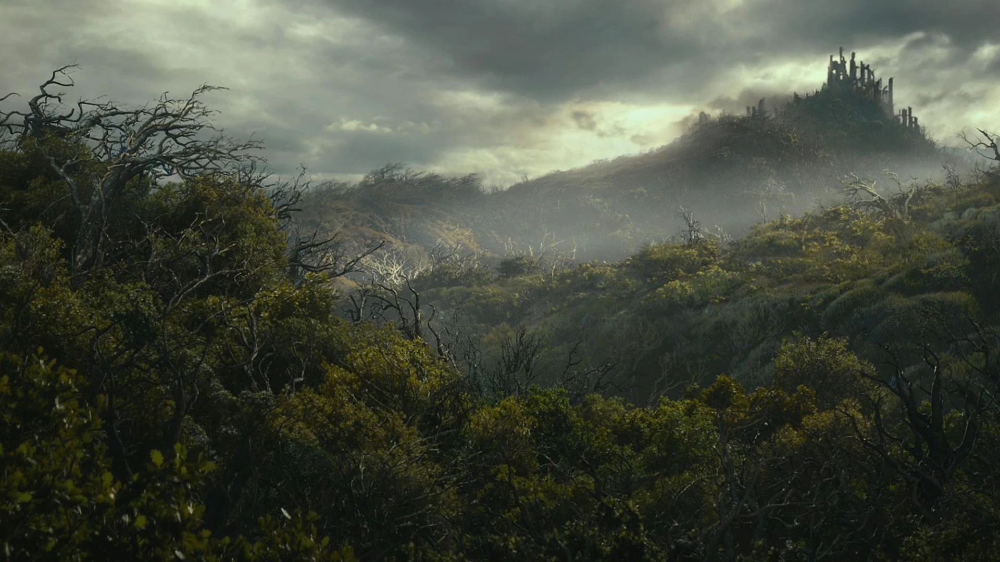
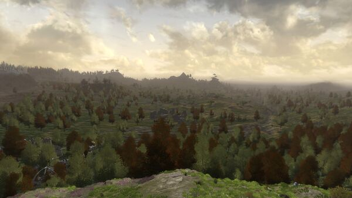
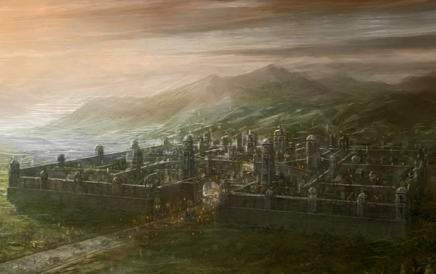
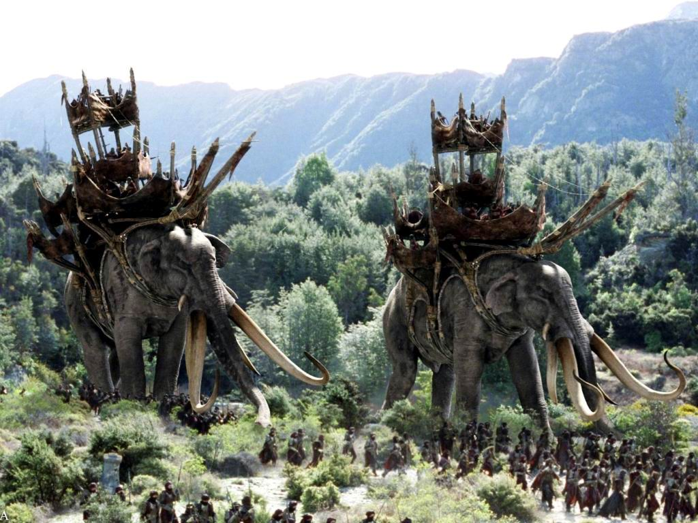

Mordor is a region located in the southeastern part of Middle-earth, considered the realm of Sauron the Dark Lord, east of Gondor, Ithilian and the Great River Anduin.
Rohan was a kingdom of men, located in the land formerly known as Calenardhon, situated in the great valley between the Misty Mountains and the White Mountains to the south.
Gondor is the mightiest realm of Men in Middle-earth. The kingdom of Rohan borders on the north, on the west is the Great Sea, on the south is Harad and on the east is Mordor.
Rhovanion, was the name of a small region east of the Greenwood, which later became the Kingdom of Rhovanion, but the name was used for the entire region in the Third Age.
Land between the Misty Mountains and the Blue Mountains, in which the realm of Arnor (and also the Shire of Hobbits) was located.
Arnor was the northern Kingdom of the Dúnedain in Middle-earth. Originally Arnor was united with Gondor in the south, however, as time passed, the two realms became separated and isolated.
Rhun was the name of the unknown in the lands of the Far Middle-Eastern land. A race of Men called the Easterlings lived in Rhun
